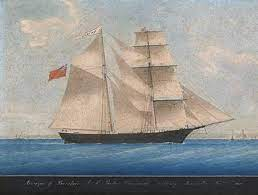

Mary Celeste
Mary Celeste non è solo il nome di un veliero, ma il nome di un mistero ancora oggi irrisolto.
Fu costruita nel 1861 da Joshua Dewis, nel porto di Spencer, una piccola comunità locale nella Nuova Scozia. Mary Celeste, occorre precisare, non è il primo nome che ebbe scritto sullo scafo a prua e a poppa, infatti, la nave fu chiamata “Amazon” dal giorno del suo varo, nel 1861, fino al 1869.
Considerato un veliero maledetto nell’ambiente marinaro, attira le prime attenzioni quando Robert McLellan (primo Comandante della nave) contrae la polmonite solo nove giorni dopo averne assunto il comando, una polmonite che presto gli sarà fatale.Una volta acquisita la proprietà, il veliero verrà rinominato “Mary Celeste” con cui presto inizierà una nuova fase della sua vita.

Il 5 novembre il brigantino salpa con 10 persone a bordo, tra cui 8 marinai e la famiglia del comandante Benjamin Briggs che comprende la figlia Sophia Matilda di appena due anni, e la moglie Sarah E. Briggs di quasi trentuno.
La nave viaggiava con 1.701 barili di alcol industriale nelle stive, un carico dal valore che si stima intorno ai 50.000$ dell’epoca e che, secondo la rotta prestabilita, partito da Staten Island, sarebbe dovuto arrivare a Genova nella seconda metà di dicembre.Poco meno di un mese dopo, a discapito di quanto sarebbe dovuto normalmente accadere, la Mary Celeste fu ritrovata ancora “navigabile”, ma l’equipaggio era svanito nel nulla.
Nonostante sia passato un mese, dal momento in cui la nave salpò dagli Usa, al momento in cui fu ritrovata non lontana dalle Isole Azzorre, si sa per certo che tutto successe nel giro di una settimana, o più probabilmente, di una notte.
Sul diario di bordo del cuoco/cambusiere della nave Edward W. Head, che l’avvista per prima, l’ultima annotazione sulla Mary Celeste risale al 25 novembre.
La nave viene poi ritrovata il 4 dicembre dalla nave Dei Gratia a circa 600 miglia dalle coste portoghesi.
Il capitano della Dei Gratia, David Morehouse, salì a bordo della nave insieme a due marinai del dell’equipaggio e rimase quasi impietrito davanti alle condizioni della nave.
Le vele, ridotte a stracci fradici, continuavano a gocciolare, come per infierire sul resto della nave che già grondava acqua.
Il cibo era ancora nei piatti, i letti erano sfatti e gli oggetti personali ancora al proprio posto.
Passa comunque di proprietario in proprietario fino al 1885 quando il suo ultimo, un certo Gilman C. Parker tentò di compiere una frode facendo sbattere la Mary Celeste contro una scogliera.Lui e suoi due soci finirono però in tribunale nel momento in cui le agenzie assicurative si accorsero della truffa; la cosa strana é che nonostante l’illecito, il Giudice rilasciò i 3 uomini.Nel giro di poco tempo, questi persero tutto: uno dei tre finì in manicomio, un altro si suicidò e Gilman C. Parker morì nel giro di pochi mesi.
Nonostante ci siano teorie più probabili di altre, non esiste nulla di certo e per questo la Mary Celeste rimane il nome di un mistero che probabilmente non verrà mai svelato.
Torna alla home